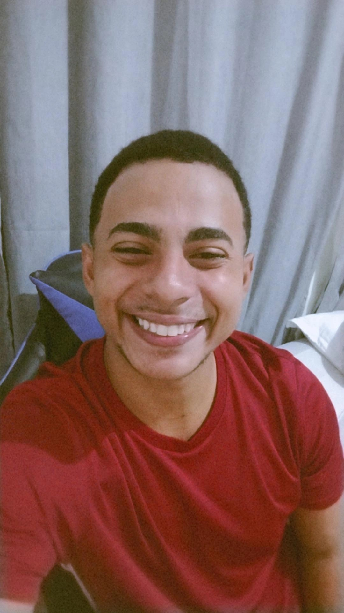

Desenvolvedor Front-end • HTML • CSS • JavaScript
Desenvolvedor front-end focado em criar interfaces modernas, intuitivas e funcionais, sempre priorizando experiência do usuário e organização do código.
Busco unir análise, design e desenvolvimento para construir soluções bem estruturadas e com impacto real para usuários e empresas.
Tenho grande interesse em UI/UX, utilizando Figma para criação de protótipos e fluxos de interface, que servem como base para o desenvolvimento.
Também possuo experiência com bancos de dados como MySQL, PostgreSQL e soluções como Supabase em projetos pessoais e acadêmicos.
Escrevo código limpo, organizado e reutilizável, sempre pensando em manutenção e escalabilidade.
Interfaces responsivas, portfólios, páginas institucionais e aplicações web com foco em usabilidade.
HTML, CSS, JavaScript, Figma, MySQL, PostgreSQL e Supabase.
Evoluir constantemente como desenvolvedor e atuar em projetos desafiadores.
Gosto de entender o problema a fundo antes de codar, buscando soluções simples, eficientes e bem pensadas.
Estou sempre estudando novas tecnologias, boas práticas e tendências para evoluir como desenvolvedor.
Aberto a novas oportunidades, aprendizados e desafios.
Vamos conversarCurso de logística integrado ao ensino médio, onde desenvolvi organização, visão de processos e responsabilidade profissional.
Formação técnica com foco em tecnologia, programação e fundamentos de sistemas. Concluído em dezembro de 2023.
Graduação onde venho me desenvolvendo bastante em lógica, desenvolvimento web e estruturação de sistemas.
Atuei como estagiário na área de desenvolvimento na Polícia Civil do Espírito Santo, participando de atividades relacionadas a sistemas, código e soluções internas.
Atualmente atuo como estagiário de suporte na Polícia Científica do Espírito Santo, em Vila Velha, lidando com atendimento técnico, resolução de problemas e suporte a usuários.